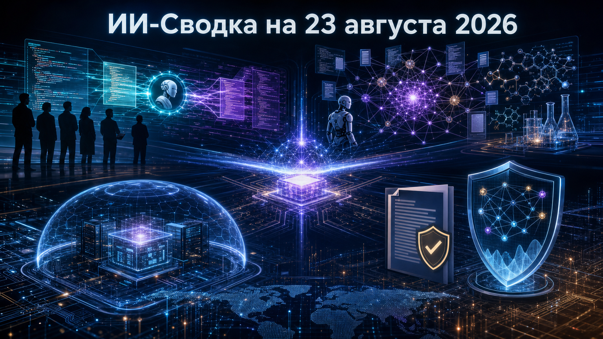

Новостей сегодня меньше, чем обычно
В сегодняшней повестке ИИ заметны два связанных сдвига: агенты всё глубже входят в рабочие процессы разработчиков и исследований, а вопрос их контроля становится предметом публичной оценки и регулирования. Новостей немного, но они показывают, что конкуренция идёт не только за возможности моделей, но и за среду их безопасного применения.
Slack предлагает командный workflow для coding-агентов, а Inherent — агента для воспроизведения научных результатов. Одновременно независимая оценка Guidelight и новая позиция OpenAI по калифорнийскому SB 53 возвращают внимание к monitoring, containment и ответственности разработчиков frontier-моделей.
Salesforce запустила Slack Code — набор выделенных code channels, в которых команда может поставить задачу агенту ИИ, отслеживать его план и изменения в коде, изучать диффы, просматривать live preview и давать обратную связь. На старте заявлены интеграции с Claude, Devin, GitHub Copilot, ChatGPT и агентами Vercel.
Как сообщает TechRadar, критические действия, включая отправку кода в production, должны проходить экспертное утверждение. Это расширяет модель агентной разработки от личного помощника в IDE к общему процессу постановки задач, review и контроля в корпоративном чате; фактическая ценность будет зависеть от качества интеграций и практики командного контроля.
Guidelight AI Standards изучила публичную документацию Anthropic, Google, Meta*, OpenAI и xAI о действиях на случай попытки модели обойти человеческий контроль. В пересказе TechCrunch наивысший результат получила OpenAI — три балла из пяти, однако оценка не нашла у лабораторий достаточного объёма публичных планов containment.
Это не аудит внутренних систем и не доказательство отсутствия защит у конкретных компаний: методология ограничена тем, что раскрыто публично, а Google и OpenAI указали, что оценка не охватывает все их практики. Тем не менее на фоне развития автономных агентов сравнение делает заметным разрыв между заявлениями о безопасности и проверяемым описанием процедур реагирования.
Лондонская лаборатория Inherent, основанная бывшими сотрудниками Google DeepMind, представила исследовательского агента Faraday. Компания заявляет, что система способна самостоятельно воспроизводить результаты опубликованных научных работ и в её внутренней оценке превзошла Claude Opus 4.8 и GPT-5.5 на этой специализированной задаче.
По данным TechCrunch, Faraday использует Qwen 3.6 с 27 млрд параметров, а GPT-5.5 Codex — как инструмент программирования. Заявление важно для направления ИИ для науки: результат может зависеть не только от масштаба базовой LLM, но и от агентной обвязки. Однако полная методология, набор задач и независимая репликация сравнения пока публично не представлены.
OpenAI призвала дополнить калифорнийский законопроект SB 53 требованиями к мониторингу frontier-моделей во время обучения и оценки, а также усилить киберзащиту на всём жизненном цикле разработки. Компания также поддержала подход, при котором штаты формируют совместимые базовые нормы до появления федерального регулирования.
Как пишет TechCrunch, эта позиция отличается от прежнего противодействия OpenAI SB 53. Пока это заявление компании, а не принятое изменение закона, но оно показывает: крупнейшие разработчики всё активнее участвуют в формировании конкретных требований к наблюдаемости моделей, раскрытию инцидентов и защите инфраструктуры.
*Meta и ее сервисы - в России запрещены